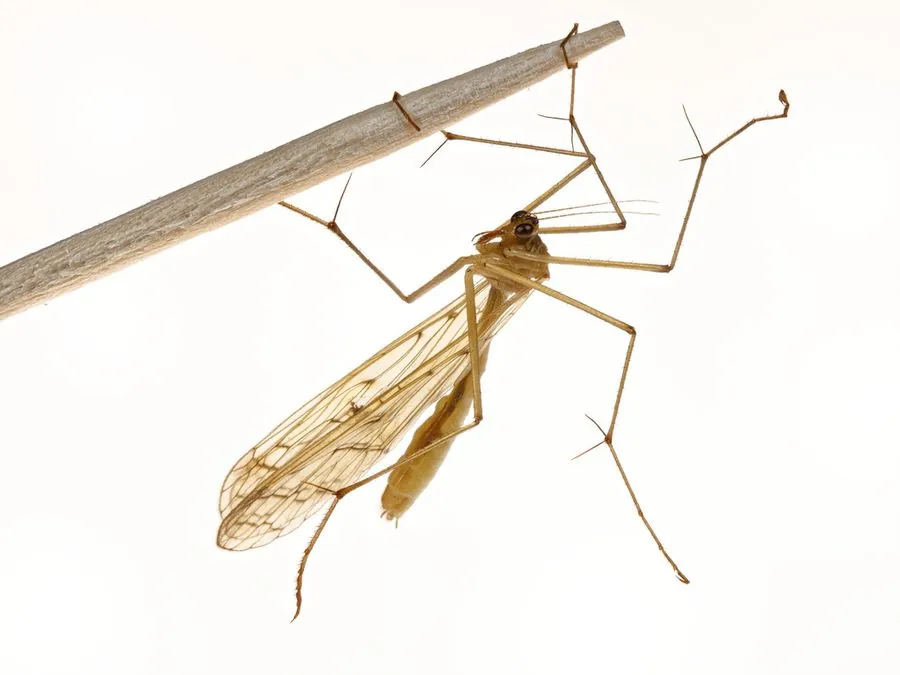

昆虫 · 动物界
蝎蛉2 Bittacus sinensis

外形像大蚊、常倒挂在枝叶下捕捉猎物的蚊蝎蛉，因用前足悬吊身体而得名，是长翅目中擅长伏击的捕食者。
- 分类
- 门节肢动物门纲昆虫纲目长翅目科蚊蝎蛉科属蚊蝎蛉属
- 栖息环境
- 林缘、灌丛和草地的植被间，成虫常倒挂在枝叶下
- 地理分布
- 东亚地区，中国多地有分布
- 保护级别
- 暂无评估
物种志
蚊蝎蛉成虫体长 15–20 mm，外形像大蚊，体细长，翅透明、狭长，足非常细长。它的复眼大而突出，能在较弱的光线下发现猎物。它虽然名字里带“蝎”，腹部末端却不像蝎蛉那样膨大上弯。
蚊蝎蛉分布于东亚，中国多地有记录，栖息于林缘、灌丛和草地。成虫喜欢倒挂在枝叶下方，用前足抓住植物，用后足捕捉飞过的小虫；这种悬吊伏击的方式在昆虫中比较少见。它是肉食性昆虫，雌性会选择献上较大猎物的雄性交配。幼虫生活在土壤和落叶层中，取食小型无脊椎动物。蚊蝎蛉对栖息地湿度有一定要求，常见于林下昆虫丰富的环境。目前它没有IUCN 的正式评估，中国未将其列入国家重点保护野生动物名录。
形态与习性
- 食性肉食性，捕捉飞过的小型昆虫
- 体长15–20 mm
- 倒挂习性用前足抓住枝叶，身体倒挂，用后足捕捉猎物
- 繁殖雌性会选择献上较大猎物的雄性
- 幼虫生活在土壤和落叶层中
- 栖息地林缘、灌丛和草地的植被间
趣味知识
- 蚊蝎蛉常倒挂在枝叶下，用前足抓握、后足捕捉飞过的小虫。
- 它属于长翅目，和蝎蛉是近亲，但腹部末端没有蝎尾状结构。
- 雌蚊蝎蛉会挑选献上更大猎物的雄性作为配偶。